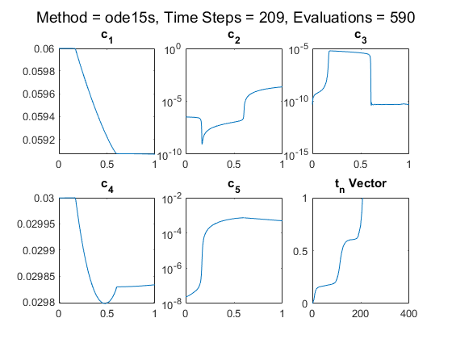

clear all
close all
odefun = 'Oregonator';
method = 'ode15s';
autostep = true;
TOL = 1e-10;
global count;
count = 0;
NSTEP=5*(10^5);
trace = 0;
t0 = 0; tfinal = 1;
TSPAN = [t0,tfinal];
U0 = [0.06; 3.3e-7; 5.01e-11; 0.03; 2.4e-8];
OPTIONS = odeset('RelTol', 1e-8, 'AbsTol', 1e-10, 'NonNegative', 1:5);
if (strcmp(method, 'ExplicitEuler')|strcmp(method, 'RK1')|...
strcmp(method, 'RK4')|strcmp(method, 'HW2') )
if strcmp(method, 'RK4')
A = [0 0 0 0; 0.5 0 0 0; 0 0.5 0 0; 0 0 1 0];
b = [1/6;1/3;1/3;1/6];
c = [0;0.5;0.5;1];
elseif (strcmp(method,'ExplicitEuler') || strcmp(method,'RK1'))
A = 0;
b = 1;
c = 0;
elseif strcmp(method,'HW2')
A = [0 0; 1 0];
b = [0.5;0.5];
c = [0;1];
end
if round(sum(b),4) == 1.0000
qorder = 1;
if round(b.'*c,4) == 0.5000
qorder = 2;
if round(b.'*(c.^2),4) == round(1/3,4) && ...
round(sum(b'.*sum(A'.*c)),4) == round(1/6,4)
qorder = 3;
if round(b.'*(c.^3),4) == 1/4 && ...
round(sum(b'.*c'.*sum(A'.*c)),4) == 1/8 && ...
round(sum(b'.*sum(A'.*c.^2)),4) == round(1/12,4) && ...
round(sum(A.*b)*sum(A'.*c)',4) == round(1/24,4)
qorder = 4;
end
end
end
end
if autostep == false
[t,U] = eulerw17d(odefun,TSPAN,U0,NSTEP,method,A,b,c);
else
[t,U] = RKw17sc(odefun,TSPAN,U0,TOL,A,b,c,qorder);
end
elseif (strcmp(method, 'ODE45v4'))
[t,U] = ode45v4(odefun,t0,tfinal,U0,TOL,trace);
elseif (strcmp(method, 'ode45'))
[t,U] = ode45(odefun,TSPAN,U0,OPTIONS);
elseif (strcmp(method, 'ode15s'))
[t,U] = ode15s(odefun,TSPAN,U0,OPTIONS);
elseif (strcmp(method, 'ode23s'))
[t,U] = ode23s(odefun,TSPAN,U0,OPTIONS);
end
timesteps = length(t);
tvector = [t0:tfinal:timesteps-1];
figure;
hold off;
for i = 1:5
subplot(2,3,i)
semilogy(t,U(:,i))
titlestr = sprintf('c_{%i}',i);
title(titlestr)
end
subplot(2,3,6)
plot(tvector,t)
title('t_n Vector')
titlestr = sprintf(['Method = ' method ...
', Time Steps = %i, Evaluations = %i'],timesteps,count);
suptitle(titlestr)
